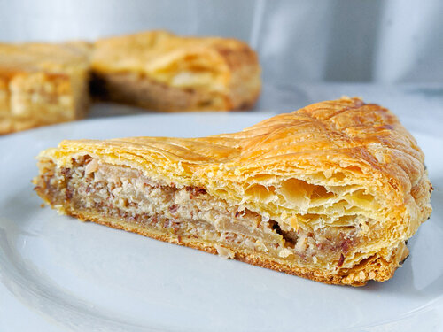

Crowned Pie

“A galette-style pie decorated with a golden crown and served at Ishgardian festivals. Baked using Talan's own special recipe” — Eorzea Database
Gathering +6% (Max 24)
Control +8% (Max 38)
Increased Spiritbond Gain +2
Ingredients
-
Pastry Sheets (Pie Dough)
-
Lemon Juice
-
Peeled, cored, and sliced Apples (Mirror Apple)
-
Whole Eggs
-
Sugar (Maple Sugar)
-
Ground Almonds (Almonds)
-
Lemon Zest
-
Ground Cinnamon (Cinnamon)
-
Salt
-
Egg Yolk
-
Water (Water Shard)
Steps
-
Thaw the puff pastry according to the package directions.
-
Fill a medium bowl with water and stir in the lemon juice and the apples.
-
Heat 2 tbsp/30 g of butter in a medium pan over medium-low heat.
-
Strain the apples and discard the water.
-
Cook the apples in the pan until they are soft but not falling apart, about 7 minutes.
-
Drain any accumulated liquid and set the apples aside to cool.
-
In a medium bowl, whisk together the whole eggs, sugar, almonds, lemon zest, cinnamon and salt.
-
Melt the remaining butter and whisk it into the almond mixture.
-
Cover the bowl with plastic wrap and refrigerate it until the puff pastry is thawed.
-
Line a baking pan with parchment paper.
-
Using a pan lid or dinner plate, trim both puff pastry sheets into circles.
-
Transfer one puff pastry circle to the prepared pan.
-
Place the almond mixture and apples in the center of the puff pastry leaving a 1”/2.5 cm border.
-
Wet the border and carefully place the second puff pastry circle on top.
-
Gently press down on the border to seal.
-
Using the back of a knife, scallop the edges and draw a design into the surface of the pie without cutting through the pastry.
-
Cut a few vents into the top crust.
-
Refrigerate the uncooked pie for 30 minutes.
-
Preheat the oven to 375°F/190°C.
-
Whisk together the egg yolk and the water to make an egg wash.
-
Brush the egg wash on the top only, avoiding the scalloped edge.
-
Bake the pie for 15 minutes then set the temperature to 350°F/180°C and bake it for another 40 minutes or until the crust is puffed and golden brown.